Zero i2c oled使用指南
硬件连接
一般市面上买到的单色oled屏幕模块一般都是同时支持spi和i2c接口的，而默认一般都是spi接口模式，需要根据说明书调整模模块上电阻的位置来转换到i2c模式。我手中这个模块一般比较常见，分辨率是128*64，需要焊接R1和R4，注意下方那个电阻位置要短接。
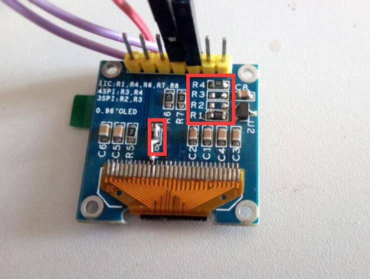
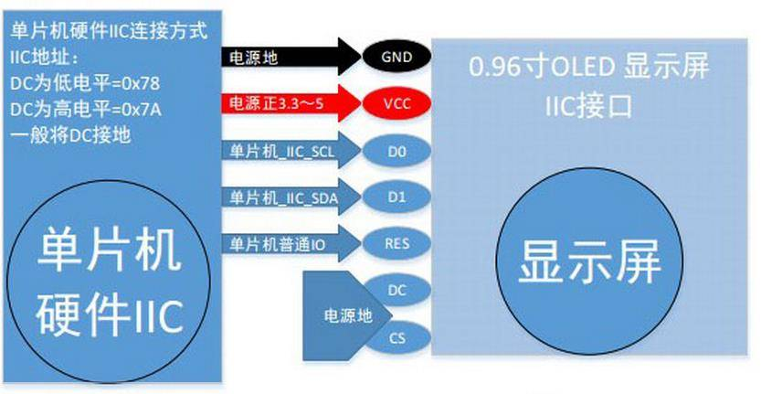
然后连接到zero的i2c0的位置，reset引脚我连接到了uart2的tx脚位置。我手中暂时没有dock，如果是使用dock，请根据实际情况插到对应位置。
ssd1307fb驱动配置
Oled使用的控制芯片是 ssd1306，最新版本的linux中包含Ssd1306的i2c驱动，驱动加载后会注册成功linux framebuffer，驱动文件路径是： /drivers/video/fbdev/ssd1307fb.c ，该驱动可以通过配置支持ssd130x系列芯片。
所以要使用oled只需要在dts配置好就可以了
进入linux目录调出配置菜单
/linux-zero-4.10.y$ make ARCH=arm menuconfig
选中 <*> Solomon SSD1307 framebuffer support
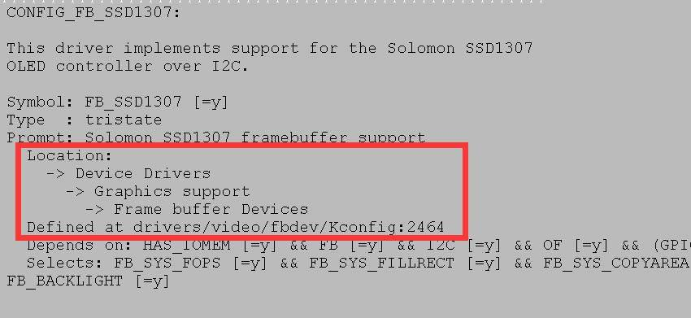
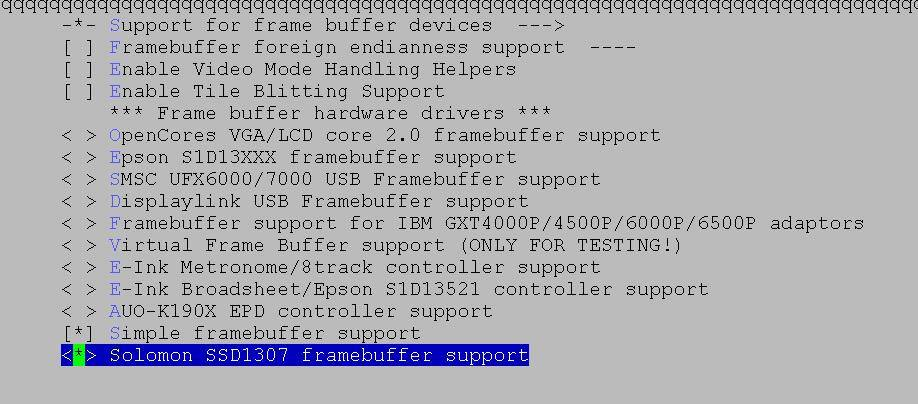
修改dts资源文件
vi arch/arm/boot/dts/sun8i-v3s-licheepi-zero.dts
添加 ssd1306fb-i2c 节点，0x3c
是i2c设备的地址，reset-getio是复位脚我选择的是*PB0*
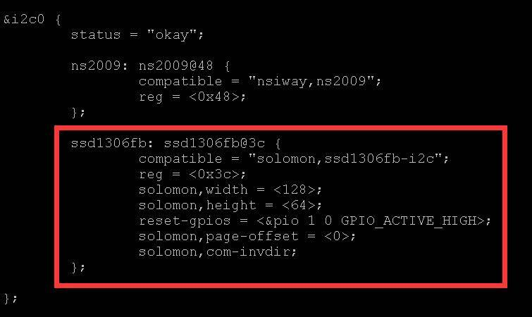
接下来编译内核和编译dtb
make ARCH=arm CROSS_COMPILE=arm-linux-gnueabihf- -j24 uImage
make ARCH=arm CROSS_COMPILE=arm-linux-gnueabihf- dtbs
然后将内核和dtbs更新到zero上，插入串口上电。
我是将驱动直接编译到内核里，可以在内核日志中看到驱动加载成功。
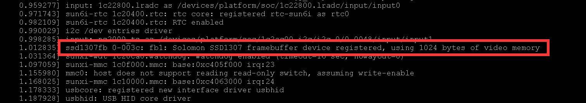
并且屏幕被点亮，该驱动默认不清空屏幕ram中内容，屏幕初始化后默认是花屏内容是正常的。如下状态。
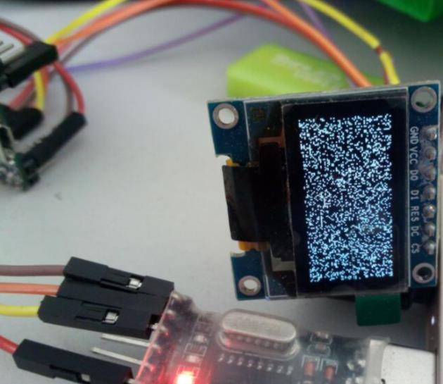
驱动注册后一般会挂载为/dev/fb0或者/dev/fb1设备文件。
写一个简单的oled模块测试程序，读取屏幕信息，并刷将荔枝派logo显示上去效果如下：
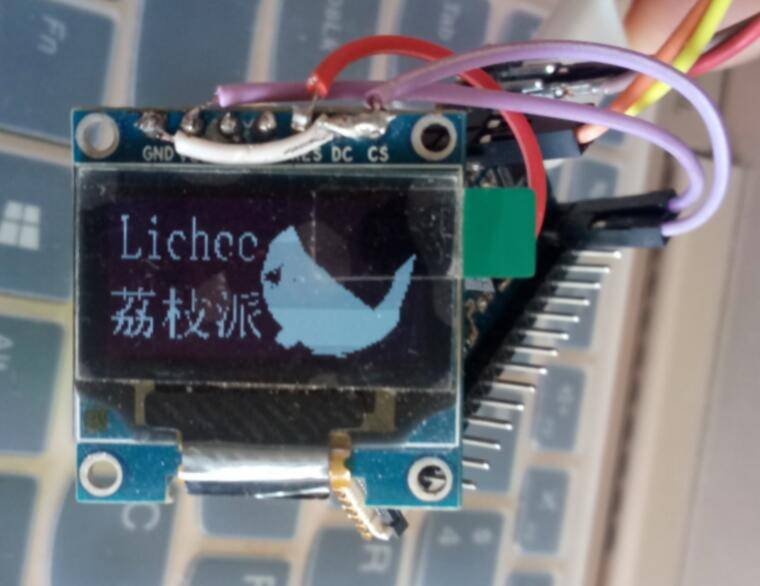
首先用photoshop做出目标图片，然后保存成bmp格式，然后使用windows自带的画图工具打开bmp，然后点击另存为保存为1位位图格式。使用字模软件将bmp转换成程序用的字节序列，我用的是zimo221这款字模工具软件
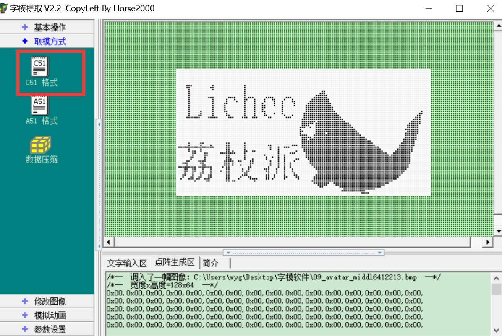
注意在参数设置中要勾选字节倒叙选项。
下面写一个测试程序，加载驱动并把图像显示到屏幕上
#include <unistd.h>
#include <stdio.h>
#include <fcntl.h>
#include <linux/fb.h>
#include <sys/mman.h>
#include <stdlib.h>
#include <string.h>
/*seconds: the seconds; mseconds: the micro seconds*/
void setTimer(int seconds, int mseconds)
{
struct timeval temp;
temp.tv_sec = seconds;
temp.tv_usec = mseconds;
printf("timer1\n");
select(0, NULL, NULL, NULL, &temp);
printf("timer2\n");
return ;
}
int main ()
{
char lichee[] = {
0x00,0x00,0x00,0x00,0x00,0x00,0x00,0x00,0x00,0x00,0x00,0x00,0x00,0x00,0x00,0x00,
0x00,0x00,0x00,0x00,0x00,0x00,0x00,0x00,0x00,0x00,0x00,0x00,0x00,0x00,0x00,0x00,
0x00,0x00,0x00,0x00,0x00,0x00,0x00,0x00,0x00,0x00,0x00,0x00,0x00,0x00,0x00,0x00,
0x00,0x00,0x00,0x00,0x00,0x00,0x00,0x00,0x00,0x00,0x00,0x00,0x00,0x00,0x00,0x00,
0x00,0x00,0x00,0x00,0x00,0x00,0x00,0x00,0x00,0x00,0x00,0x00,0x00,0x00,0x00,0x00,
0x00,0x00,0x00,0x00,0x00,0x00,0x00,0x00,0x00,0x00,0x00,0x00,0x00,0x00,0x00,0x00,
0x00,0x00,0x00,0x00,0x00,0x00,0x00,0x00,0x00,0x00,0x00,0x00,0x00,0x00,0x00,0x00,
0x00,0x00,0x00,0x00,0x00,0x00,0x00,0x00,0x00,0x00,0x00,0x00,0x00,0x00,0x00,0x00,
0xE0,0x00,0x04,0x00,0x04,0x00,0x00,0x00,0x00,0x00,0x00,0x00,0x00,0x00,0x00,0x00,
0x60,0x00,0x06,0x00,0x04,0x00,0x00,0x00,0x00,0x00,0x00,0x00,0x00,0x00,0x00,0x00,
0x40,0x00,0x04,0x00,0x04,0x00,0x00,0x00,0x00,0x00,0x00,0x00,0x00,0x00,0x00,0x00,
0x40,0x00,0x00,0x00,0x04,0x00,0x00,0x00,0x00,0x06,0x00,0x00,0x00,0x00,0x00,0x00,
0x40,0x00,0x00,0x00,0x04,0x00,0x00,0x00,0x00,0x07,0x00,0x00,0x00,0x00,0x00,0x00,
0x40,0x00,0x00,0x00,0x04,0x00,0x00,0x00,0xC0,0x0F,0x00,0x00,0x00,0x00,0x00,0x00,
0x40,0x00,0x07,0x3C,0x74,0xE0,0x81,0x03,0xE0,0x0F,0x00,0x00,0x00,0x00,0x00,0x00,
0x40,0x00,0x04,0x22,0x8C,0x10,0x43,0x04,0xF0,0x1F,0x00,0x00,0x00,0x00,0x00,0x00,
0x40,0x00,0x04,0x42,0x84,0x10,0x22,0x0C,0xF8,0x1F,0x00,0x00,0x00,0x00,0x00,0x00,
0x40,0x00,0x04,0x03,0x84,0x08,0x22,0x08,0xFC,0x3F,0x00,0x00,0x00,0x00,0x00,0x00,
0x40,0x00,0x04,0x01,0x84,0x18,0x22,0x08,0xFE,0x3F,0x00,0x00,0x00,0x00,0x00,0x00,
0x40,0x00,0x04,0x01,0x84,0x18,0x20,0x00,0xFE,0x7F,0x00,0x00,0x00,0x00,0x00,0x00,
0x40,0x00,0x04,0x01,0x84,0x08,0x20,0x00,0xFE,0x7F,0x00,0x00,0x00,0x00,0x00,0x00,
0x40,0x10,0x04,0x03,0x84,0x18,0x20,0x00,0xFE,0xFF,0x00,0x00,0x00,0x00,0x00,0x08,
0x40,0x10,0x04,0x02,0x84,0x10,0x22,0x00,0xFF,0xFF,0x01,0x00,0x00,0x00,0x00,0x0C,
0x40,0x18,0x04,0x06,0x84,0x30,0x40,0x04,0xFF,0xFF,0x03,0x00,0x00,0x00,0x00,0x06,
0xE0,0x0F,0x1F,0x1C,0xCE,0xC1,0x80,0x03,0xFF,0xFF,0x07,0x00,0x00,0x00,0x00,0x07,
0x00,0x00,0x00,0x00,0x00,0x00,0x00,0x80,0xFF,0xFF,0x0F,0x00,0x00,0x00,0x80,0x07,
0x00,0x00,0x00,0x00,0x00,0x00,0x00,0x80,0xBF,0xFF,0x1F,0x00,0x00,0x00,0xC0,0x07,
0x00,0x00,0x00,0x00,0x00,0x00,0x00,0x80,0xDF,0xFF,0x7F,0x00,0x00,0x00,0xE0,0x07,
0x00,0x00,0x00,0x00,0x00,0x00,0x00,0x80,0xC7,0xFF,0xFF,0x00,0x00,0x00,0xF0,0x03,
0x00,0x00,0x00,0x00,0x00,0x00,0x00,0xC0,0xC9,0xFF,0xFF,0x01,0x00,0x00,0xF0,0x03,
0x00,0x00,0x00,0x00,0x00,0x00,0x00,0x40,0xC0,0xFF,0xFF,0x03,0x00,0x00,0xF8,0x03,
0x00,0x00,0x00,0x00,0x00,0x00,0x00,0xC0,0xC0,0xFF,0xFF,0x07,0x00,0x00,0xF0,0x03,
0x00,0x00,0x00,0x00,0x00,0x00,0x00,0x40,0xC0,0xF7,0xFF,0x0F,0x00,0x00,0xF8,0x03,
0x00,0x00,0x00,0x00,0x00,0x00,0x00,0xC0,0xE3,0xFF,0xFF,0x1F,0x00,0x00,0xF8,0x01,
0x00,0x00,0x00,0x00,0x00,0x00,0x00,0x80,0xEF,0xFF,0xFF,0x7F,0x00,0x00,0xF8,0x01,
0x00,0x00,0x00,0x00,0x00,0x00,0x00,0x80,0xFB,0xFF,0xFF,0xFF,0x00,0x00,0xFC,0x01,
0x00,0x00,0x00,0x00,0x00,0x00,0x00,0x80,0xFF,0xFF,0xFF,0xFF,0x03,0x00,0xFC,0x00,
0x40,0x30,0x00,0x06,0x04,0x00,0x00,0x80,0xFF,0xFF,0xFF,0xFF,0x07,0x00,0xFE,0x00,
0x40,0x10,0x02,0x06,0x04,0xC0,0x00,0x9C,0xFF,0xFF,0xFF,0xFF,0x0F,0x00,0xFF,0x00,
0xFE,0xFF,0x07,0x06,0x04,0x80,0xC8,0x81,0xFF,0xFF,0xFF,0xFF,0x3F,0x00,0x7F,0x00,
0x40,0x10,0x00,0x06,0x04,0x80,0x08,0x00,0xFF,0xFF,0xFF,0xFF,0x7F,0x80,0x7F,0x00,
0x40,0x13,0x00,0x16,0xCC,0x00,0x08,0x10,0xFF,0xFF,0xFF,0xFF,0xFF,0xC0,0x7F,0x00,
0x00,0xC3,0xC0,0x3F,0x04,0x00,0x08,0x0E,0xFE,0xFF,0xFF,0xFF,0xFF,0xE3,0x3F,0x00,
0x00,0xC1,0x00,0x06,0x04,0x10,0x48,0x00,0xFE,0xFF,0xFF,0xFF,0xFF,0xF7,0x3F,0x00,
0x80,0x41,0x00,0x06,0x04,0x20,0x49,0x00,0xFE,0xFF,0xFF,0xFF,0xFF,0xFF,0x3F,0x00,
0x80,0x40,0x00,0x0E,0x44,0x20,0x48,0x30,0xFC,0xFF,0xFF,0xFF,0xFF,0xFF,0x3F,0x00,
0x60,0x78,0x00,0x9F,0x61,0x80,0x48,0x08,0xF8,0xFF,0xFF,0xFF,0xFF,0xFF,0x3F,0x00,
0x38,0x30,0x00,0x17,0x60,0x80,0x48,0x02,0xF8,0xFF,0xFF,0xFF,0xFF,0xFF,0x3F,0x00,
0x20,0x60,0x00,0x17,0x21,0x80,0x48,0x02,0xF0,0xFF,0xFF,0xFF,0xFF,0xFF,0x1F,0x00,
0xFE,0xFB,0x83,0x06,0x30,0x40,0x48,0x02,0xE0,0xFF,0xFF,0xFF,0xFF,0xFF,0x1F,0x00,
0x30,0x23,0x02,0x06,0x12,0x70,0x44,0x04,0xC0,0xFF,0xFF,0xFF,0xFF,0xFF,0x0F,0x00,
0x30,0x23,0x42,0x06,0x1A,0x60,0x44,0x04,0x80,0xFF,0xFF,0xFF,0xFF,0xFF,0x07,0x00,
0x10,0x31,0x02,0x06,0x0C,0x40,0x44,0x08,0x80,0xFF,0xFF,0xFF,0xFF,0xFF,0x03,0x00,
0x18,0x11,0x03,0x06,0x0E,0x60,0x42,0x18,0xC0,0xFF,0xFF,0xFF,0xFF,0xFF,0x01,0x00,
0x88,0x19,0x03,0x06,0x31,0x60,0xC2,0x30,0xE0,0xFF,0xFF,0xFF,0xFF,0xFF,0x00,0x00,
0xC4,0xCD,0x01,0x86,0xE0,0x61,0x41,0x20,0xE0,0xFF,0xFF,0xFF,0xFF,0x7F,0x00,0x00,
0x00,0x82,0x01,0x36,0x80,0x00,0x00,0x00,0xF0,0xFF,0xFF,0xFF,0xFF,0x1F,0x00,0x00,
0x00,0x00,0x00,0x00,0x00,0x00,0x00,0x00,0xE0,0x9F,0xFF,0xFF,0xFF,0x07,0x00,0x00,
0x00,0x00,0x00,0x00,0x00,0x00,0x00,0x00,0x80,0x0F,0xFF,0xFF,0xFF,0x01,0x00,0x00,
0x00,0x00,0x00,0x00,0x00,0x00,0x00,0x00,0x00,0x03,0xFC,0xFF,0x7F,0x00,0x00,0x00,
0x00,0x00,0x00,0x00,0x00,0x00,0x00,0x00,0x00,0x00,0xF0,0xFF,0x0F,0x00,0x00,0x00,
0x00,0x00,0x00,0x00,0x00,0x00,0x00,0x00,0x00,0x00,0xF8,0x7F,0x00,0x00,0x00,0x00,
0x00,0x00,0x00,0x00,0x00,0x00,0x00,0x00,0x00,0x00,0x00,0xE0,0x01,0x00,0x00,0x00,
0x00,0x00,0x00,0x00,0x00,0x00,0x00,0x00,0x00,0x00,0x00,0x00,0x00,0x00,0x00,0x00
};
int fp=0;
long screensize=0;
char *fbp = 0;
struct fb_var_screeninfo vinfo;
struct fb_fix_screeninfo finfo;
fp = open ("/dev/fb1",O_RDWR);
if (fp < 0){
printf("Error : Can not open framebuffer device/n");
exit(1);
}
if (ioctl(fp,FBIOGET_FSCREENINFO,&finfo)){
printf("Error reading fixed information/n");
exit(2);
}
if (ioctl(fp,FBIOGET_VSCREENINFO,&vinfo)){
printf("Error reading variable information/n");
exit(3);
}
printf("The mem is :%d\n",finfo.smem_len);
printf("The line_length is :%d\n",finfo.line_length);
printf("The xres is :%d\n",vinfo.xres);
printf("The yres is :%d\n",vinfo.yres);
printf("bits_per_pixel is :%d\n",vinfo.bits_per_pixel);
screensize = vinfo.xres * vinfo.yres * vinfo.bits_per_pixel / 8;
printf("screensize: %d\n",screensize);
fbp =(char *) mmap (0, screensize, PROT_READ | PROT_WRITE, MAP_SHARED,
fp,0);
if ((int) fbp == -1)
{
printf ("Error: failed to map framebuffer device to memory./n");
exit (4);
}
int i=0;
memset(fbp, 0x00, 1024);
setTimer(3,0);
while(1){
for(i=0;i<1024;i++){
fbp[i]=lichee[i];
}
setTimer(3,0);
memset(fbp, 0x00, 1024);
setTimer(3,0);
}
munmap (fbp, screensize);
close (fp);
}
将字节序在程序中定义为数组在荔枝板中，编译程序并执行。
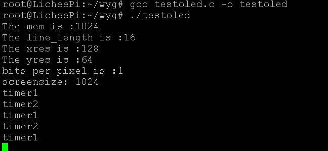
单片机驱动一直为i2c驱动
一般情况下使用ssb1307fb这个驱动就很完美了了，我在发现ssd1307fb这个驱动程序之前，我将显示屏厂家提供的stm8
i2c测试代码移植到了linux上实现了一个驱动，加载驱动后效果如下
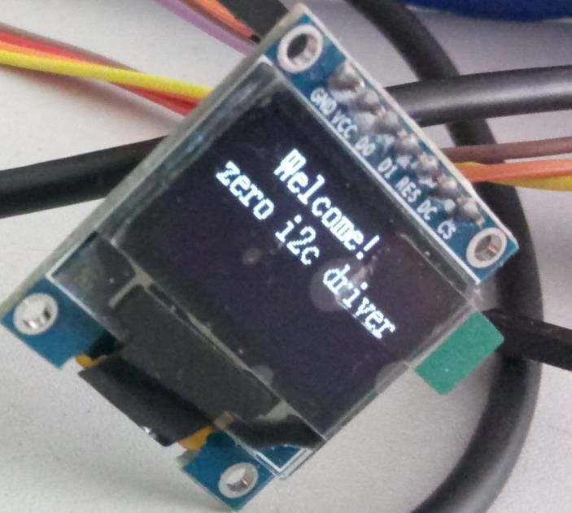
我将此驱动也发出来供参考，该驱动程序直接在linux
i2c设备注册中实现了oled的测试显示，该驱动包含一个基本ascii的字库和字符串显示逻辑。
#include <linux/kernel.h>
#include <linux/init.h>
#include <linux/module.h>
#include <linux/slab.h>
#include <linux/jiffies.h>
#include <linux/i2c.h>
#include <linux/mutex.h>
#include <linux/fs.h>
#include <asm/uaccess.h>
#define SSD1306_CMD 0
#define SSD1306_DAT 1
#define SSD1306_WIDTH 128
#define SSD1306_HEIGHT 64
#define SSD1306_TS_NAME "ssd1306_ts"
static uint8_t s_chDispalyBuffer[128][8];
const uint8_t c_chFont1608[95][16] = {
{0x00,0x00,0x00,0x00,0x00,0x00,0x00,0x00,0x00,0x00,0x00,0x00,0x00,0x00,0x00,0x00},/*" ",0*/
{0x00,0x00,0x00,0x00,0x00,0x00,0x1F,0xCC,0x00,0x0C,0x00,0x00,0x00,0x00,0x00,0x00},/*"!",1*/
{0x00,0x00,0x08,0x00,0x30,0x00,0x60,0x00,0x08,0x00,0x30,0x00,0x60,0x00,0x00,0x00},/*""",2*/
{0x02,0x20,0x03,0xFC,0x1E,0x20,0x02,0x20,0x03,0xFC,0x1E,0x20,0x02,0x20,0x00,0x00},/*"#",3*/
{0x00,0x00,0x0E,0x18,0x11,0x04,0x3F,0xFF,0x10,0x84,0x0C,0x78,0x00,0x00,0x00,0x00},/*"$",4*/
{0x0F,0x00,0x10,0x84,0x0F,0x38,0x00,0xC0,0x07,0x78,0x18,0x84,0x00,0x78,0x00,0x00},/*"%",5*/
{0x00,0x78,0x0F,0x84,0x10,0xC4,0x11,0x24,0x0E,0x98,0x00,0xE4,0x00,0x84,0x00,0x08},/*"&",6*/
{0x08,0x00,0x68,0x00,0x70,0x00,0x00,0x00,0x00,0x00,0x00,0x00,0x00,0x00,0x00,0x00},/*"'",7*/
{0x00,0x00,0x00,0x00,0x00,0x00,0x07,0xE0,0x18,0x18,0x20,0x04,0x40,0x02,0x00,0x00},/*"(",8*/
{0x00,0x00,0x40,0x02,0x20,0x04,0x18,0x18,0x07,0xE0,0x00,0x00,0x00,0x00,0x00,0x00},/*")",9*/
{0x02,0x40,0x02,0x40,0x01,0x80,0x0F,0xF0,0x01,0x80,0x02,0x40,0x02,0x40,0x00,0x00},/*"*",10*/
{0x00,0x80,0x00,0x80,0x00,0x80,0x0F,0xF8,0x00,0x80,0x00,0x80,0x00,0x80,0x00,0x00},/*"+",11*/
{0x00,0x01,0x00,0x0D,0x00,0x0E,0x00,0x00,0x00,0x00,0x00,0x00,0x00,0x00,0x00,0x00},/*",",12*/
{0x00,0x00,0x00,0x80,0x00,0x80,0x00,0x80,0x00,0x80,0x00,0x80,0x00,0x80,0x00,0x80},/*"-",13*/
{0x00,0x00,0x00,0x0C,0x00,0x0C,0x00,0x00,0x00,0x00,0x00,0x00,0x00,0x00,0x00,0x00},/*".",14*/
{0x00,0x00,0x00,0x06,0x00,0x18,0x00,0x60,0x01,0x80,0x06,0x00,0x18,0x00,0x20,0x00},/*"/",15*/
{0x00,0x00,0x07,0xF0,0x08,0x08,0x10,0x04,0x10,0x04,0x08,0x08,0x07,0xF0,0x00,0x00},/*"0",16*/
{0x00,0x00,0x08,0x04,0x08,0x04,0x1F,0xFC,0x00,0x04,0x00,0x04,0x00,0x00,0x00,0x00},/*"1",17*/
{0x00,0x00,0x0E,0x0C,0x10,0x14,0x10,0x24,0x10,0x44,0x11,0x84,0x0E,0x0C,0x00,0x00},/*"2",18*/
{0x00,0x00,0x0C,0x18,0x10,0x04,0x11,0x04,0x11,0x04,0x12,0x88,0x0C,0x70,0x00,0x00},/*"3",19*/
{0x00,0x00,0x00,0xE0,0x03,0x20,0x04,0x24,0x08,0x24,0x1F,0xFC,0x00,0x24,0x00,0x00},/*"4",20*/
{0x00,0x00,0x1F,0x98,0x10,0x84,0x11,0x04,0x11,0x04,0x10,0x88,0x10,0x70,0x00,0x00},/*"5",21*/
{0x00,0x00,0x07,0xF0,0x08,0x88,0x11,0x04,0x11,0x04,0x18,0x88,0x00,0x70,0x00,0x00},/*"6",22*/
{0x00,0x00,0x1C,0x00,0x10,0x00,0x10,0xFC,0x13,0x00,0x1C,0x00,0x10,0x00,0x00,0x00},/*"7",23*/
{0x00,0x00,0x0E,0x38,0x11,0x44,0x10,0x84,0x10,0x84,0x11,0x44,0x0E,0x38,0x00,0x00},/*"8",24*/
{0x00,0x00,0x07,0x00,0x08,0x8C,0x10,0x44,0x10,0x44,0x08,0x88,0x07,0xF0,0x00,0x00},/*"9",25*/
{0x00,0x00,0x00,0x00,0x00,0x00,0x03,0x0C,0x03,0x0C,0x00,0x00,0x00,0x00,0x00,0x00},/*":",26*/
{0x00,0x00,0x00,0x00,0x00,0x01,0x01,0x06,0x00,0x00,0x00,0x00,0x00,0x00,0x00,0x00},/*";",27*/
{0x00,0x00,0x00,0x80,0x01,0x40,0x02,0x20,0x04,0x10,0x08,0x08,0x10,0x04,0x00,0x00},/*"<",28*/
{0x02,0x20,0x02,0x20,0x02,0x20,0x02,0x20,0x02,0x20,0x02,0x20,0x02,0x20,0x00,0x00},/*"=",29*/
{0x00,0x00,0x10,0x04,0x08,0x08,0x04,0x10,0x02,0x20,0x01,0x40,0x00,0x80,0x00,0x00},/*">",30*/
{0x00,0x00,0x0E,0x00,0x12,0x00,0x10,0x0C,0x10,0x6C,0x10,0x80,0x0F,0x00,0x00,0x00},/*"?",31*/
{0x03,0xE0,0x0C,0x18,0x13,0xE4,0x14,0x24,0x17,0xC4,0x08,0x28,0x07,0xD0,0x00,0x00},/*"@",32*/
{0x00,0x04,0x00,0x3C,0x03,0xC4,0x1C,0x40,0x07,0x40,0x00,0xE4,0x00,0x1C,0x00,0x04},/*"A",33*/
{0x10,0x04,0x1F,0xFC,0x11,0x04,0x11,0x04,0x11,0x04,0x0E,0x88,0x00,0x70,0x00,0x00},/*"B",34*/
{0x03,0xE0,0x0C,0x18,0x10,0x04,0x10,0x04,0x10,0x04,0x10,0x08,0x1C,0x10,0x00,0x00},/*"C",35*/
{0x10,0x04,0x1F,0xFC,0x10,0x04,0x10,0x04,0x10,0x04,0x08,0x08,0x07,0xF0,0x00,0x00},/*"D",36*/
{0x10,0x04,0x1F,0xFC,0x11,0x04,0x11,0x04,0x17,0xC4,0x10,0x04,0x08,0x18,0x00,0x00},/*"E",37*/
{0x10,0x04,0x1F,0xFC,0x11,0x04,0x11,0x00,0x17,0xC0,0x10,0x00,0x08,0x00,0x00,0x00},/*"F",38*/
{0x03,0xE0,0x0C,0x18,0x10,0x04,0x10,0x04,0x10,0x44,0x1C,0x78,0x00,0x40,0x00,0x00},/*"G",39*/
{0x10,0x04,0x1F,0xFC,0x10,0x84,0x00,0x80,0x00,0x80,0x10,0x84,0x1F,0xFC,0x10,0x04},/*"H",40*/
{0x00,0x00,0x10,0x04,0x10,0x04,0x1F,0xFC,0x10,0x04,0x10,0x04,0x00,0x00,0x00,0x00},/*"I",41*/
{0x00,0x03,0x00,0x01,0x10,0x01,0x10,0x01,0x1F,0xFE,0x10,0x00,0x10,0x00,0x00,0x00},/*"J",42*/
{0x10,0x04,0x1F,0xFC,0x11,0x04,0x03,0x80,0x14,0x64,0x18,0x1C,0x10,0x04,0x00,0x00},/*"K",43*/
{0x10,0x04,0x1F,0xFC,0x10,0x04,0x00,0x04,0x00,0x04,0x00,0x04,0x00,0x0C,0x00,0x00},/*"L",44*/
{0x10,0x04,0x1F,0xFC,0x1F,0x00,0x00,0xFC,0x1F,0x00,0x1F,0xFC,0x10,0x04,0x00,0x00},/*"M",45*/
{0x10,0x04,0x1F,0xFC,0x0C,0x04,0x03,0x00,0x00,0xE0,0x10,0x18,0x1F,0xFC,0x10,0x00},/*"N",46*/
{0x07,0xF0,0x08,0x08,0x10,0x04,0x10,0x04,0x10,0x04,0x08,0x08,0x07,0xF0,0x00,0x00},/*"O",47*/
{0x10,0x04,0x1F,0xFC,0x10,0x84,0x10,0x80,0x10,0x80,0x10,0x80,0x0F,0x00,0x00,0x00},/*"P",48*/
{0x07,0xF0,0x08,0x18,0x10,0x24,0x10,0x24,0x10,0x1C,0x08,0x0A,0x07,0xF2,0x00,0x00},/*"Q",49*/
{0x10,0x04,0x1F,0xFC,0x11,0x04,0x11,0x00,0x11,0xC0,0x11,0x30,0x0E,0x0C,0x00,0x04},/*"R",50*/
{0x00,0x00,0x0E,0x1C,0x11,0x04,0x10,0x84,0x10,0x84,0x10,0x44,0x1C,0x38,0x00,0x00},/*"S",51*/
{0x18,0x00,0x10,0x00,0x10,0x04,0x1F,0xFC,0x10,0x04,0x10,0x00,0x18,0x00,0x00,0x00},/*"T",52*/
{0x10,0x00,0x1F,0xF8,0x10,0x04,0x00,0x04,0x00,0x04,0x10,0x04,0x1F,0xF8,0x10,0x00},/*"U",53*/
{0x10,0x00,0x1E,0x00,0x11,0xE0,0x00,0x1C,0x00,0x70,0x13,0x80,0x1C,0x00,0x10,0x00},/*"V",54*/
{0x1F,0xC0,0x10,0x3C,0x00,0xE0,0x1F,0x00,0x00,0xE0,0x10,0x3C,0x1F,0xC0,0x00,0x00},/*"W",55*/
{0x10,0x04,0x18,0x0C,0x16,0x34,0x01,0xC0,0x01,0xC0,0x16,0x34,0x18,0x0C,0x10,0x04},/*"X",56*/
{0x10,0x00,0x1C,0x00,0x13,0x04,0x00,0xFC,0x13,0x04,0x1C,0x00,0x10,0x00,0x00,0x00},/*"Y",57*/
{0x08,0x04,0x10,0x1C,0x10,0x64,0x10,0x84,0x13,0x04,0x1C,0x04,0x10,0x18,0x00,0x00},/*"Z",58*/
{0x00,0x00,0x00,0x00,0x00,0x00,0x7F,0xFE,0x40,0x02,0x40,0x02,0x40,0x02,0x00,0x00},/*"[",59*/
{0x00,0x00,0x30,0x00,0x0C,0x00,0x03,0x80,0x00,0x60,0x00,0x1C,0x00,0x03,0x00,0x00},/*"\",60*/
{0x00,0x00,0x40,0x02,0x40,0x02,0x40,0x02,0x7F,0xFE,0x00,0x00,0x00,0x00,0x00,0x00},/*"]",61*/
{0x00,0x00,0x00,0x00,0x20,0x00,0x40,0x00,0x40,0x00,0x40,0x00,0x20,0x00,0x00,0x00},/*"^",62*/
{0x00,0x01,0x00,0x01,0x00,0x01,0x00,0x01,0x00,0x01,0x00,0x01,0x00,0x01,0x00,0x01},/*"_",63*/
{0x00,0x00,0x40,0x00,0x40,0x00,0x20,0x00,0x00,0x00,0x00,0x00,0x00,0x00,0x00,0x00},/*"`",64*/
{0x00,0x00,0x00,0x98,0x01,0x24,0x01,0x44,0x01,0x44,0x01,0x44,0x00,0xFC,0x00,0x04},/*"a",65*/
{0x10,0x00,0x1F,0xFC,0x00,0x88,0x01,0x04,0x01,0x04,0x00,0x88,0x00,0x70,0x00,0x00},/*"b",66*/
{0x00,0x00,0x00,0x70,0x00,0x88,0x01,0x04,0x01,0x04,0x01,0x04,0x00,0x88,0x00,0x00},/*"c",67*/
{0x00,0x00,0x00,0x70,0x00,0x88,0x01,0x04,0x01,0x04,0x11,0x08,0x1F,0xFC,0x00,0x04},/*"d",68*/
{0x00,0x00,0x00,0xF8,0x01,0x44,0x01,0x44,0x01,0x44,0x01,0x44,0x00,0xC8,0x00,0x00},/*"e",69*/
{0x00,0x00,0x01,0x04,0x01,0x04,0x0F,0xFC,0x11,0x04,0x11,0x04,0x11,0x00,0x18,0x00},/*"f",70*/
{0x00,0x00,0x00,0xD6,0x01,0x29,0x01,0x29,0x01,0x29,0x01,0xC9,0x01,0x06,0x00,0x00},/*"g",71*/
{0x10,0x04,0x1F,0xFC,0x00,0x84,0x01,0x00,0x01,0x00,0x01,0x04,0x00,0xFC,0x00,0x04},/*"h",72*/
{0x00,0x00,0x01,0x04,0x19,0x04,0x19,0xFC,0x00,0x04,0x00,0x04,0x00,0x00,0x00,0x00},/*"i",73*/
{0x00,0x00,0x00,0x03,0x00,0x01,0x01,0x01,0x19,0x01,0x19,0xFE,0x00,0x00,0x00,0x00},/*"j",74*/
{0x10,0x04,0x1F,0xFC,0x00,0x24,0x00,0x40,0x01,0xB4,0x01,0x0C,0x01,0x04,0x00,0x00},/*"k",75*/
{0x00,0x00,0x10,0x04,0x10,0x04,0x1F,0xFC,0x00,0x04,0x00,0x04,0x00,0x00,0x00,0x00},/*"l",76*/
{0x01,0x04,0x01,0xFC,0x01,0x04,0x01,0x00,0x01,0xFC,0x01,0x04,0x01,0x00,0x00,0xFC},/*"m",77*/
{0x01,0x04,0x01,0xFC,0x00,0x84,0x01,0x00,0x01,0x00,0x01,0x04,0x00,0xFC,0x00,0x04},/*"n",78*/
{0x00,0x00,0x00,0xF8,0x01,0x04,0x01,0x04,0x01,0x04,0x01,0x04,0x00,0xF8,0x00,0x00},/*"o",79*/
{0x01,0x01,0x01,0xFF,0x00,0x85,0x01,0x04,0x01,0x04,0x00,0x88,0x00,0x70,0x00,0x00},/*"p",80*/
{0x00,0x00,0x00,0x70,0x00,0x88,0x01,0x04,0x01,0x04,0x01,0x05,0x01,0xFF,0x00,0x01},/*"q",81*/
{0x01,0x04,0x01,0x04,0x01,0xFC,0x00,0x84,0x01,0x04,0x01,0x00,0x01,0x80,0x00,0x00},/*"r",82*/
{0x00,0x00,0x00,0xCC,0x01,0x24,0x01,0x24,0x01,0x24,0x01,0x24,0x01,0x98,0x00,0x00},/*"s",83*/
{0x00,0x00,0x01,0x00,0x01,0x00,0x07,0xF8,0x01,0x04,0x01,0x04,0x00,0x00,0x00,0x00},/*"t",84*/
{0x01,0x00,0x01,0xF8,0x00,0x04,0x00,0x04,0x00,0x04,0x01,0x08,0x01,0xFC,0x00,0x04},/*"u",85*/
{0x01,0x00,0x01,0x80,0x01,0x70,0x00,0x0C,0x00,0x10,0x01,0x60,0x01,0x80,0x01,0x00},/*"v",86*/
{0x01,0xF0,0x01,0x0C,0x00,0x30,0x01,0xC0,0x00,0x30,0x01,0x0C,0x01,0xF0,0x01,0x00},/*"w",87*/
{0x00,0x00,0x01,0x04,0x01,0x8C,0x00,0x74,0x01,0x70,0x01,0x8C,0x01,0x04,0x00,0x00},/*"x",88*/
{0x01,0x01,0x01,0x81,0x01,0x71,0x00,0x0E,0x00,0x18,0x01,0x60,0x01,0x80,0x01,0x00},/*"y",89*/
{0x00,0x00,0x01,0x84,0x01,0x0C,0x01,0x34,0x01,0x44,0x01,0x84,0x01,0x0C,0x00,0x00},/*"z",90*/
{0x00,0x00,0x00,0x00,0x00,0x00,0x00,0x00,0x01,0x00,0x3E,0xFC,0x40,0x02,0x40,0x02},/*"{",91*/
{0x00,0x00,0x00,0x00,0x00,0x00,0x00,0x00,0xFF,0xFF,0x00,0x00,0x00,0x00,0x00,0x00},/*"|",92*/
{0x00,0x00,0x40,0x02,0x40,0x02,0x3E,0xFC,0x01,0x00,0x00,0x00,0x00,0x00,0x00,0x00},/*"}",93*/
{0x00,0x00,0x60,0x00,0x80,0x00,0x80,0x00,0x40,0x00,0x40,0x00,0x20,0x00,0x20,0x00},/*"~",94*/
};
struct i2c_client *ssd1306_client;
static void ssd1306_write_byte(uint8_t chData, uint8_t chCmd)
{
uint8_t cmd = 0x00;
if (chCmd) {
cmd = 0x40;
} else {
cmd = 0x00;
}
i2c_smbus_write_byte_data(ssd1306_client, cmd, chData);
}
void ssd1306_display_on(void)
{
ssd1306_write_byte(0x8D, SSD1306_CMD);
ssd1306_write_byte(0x14, SSD1306_CMD);
ssd1306_write_byte(0xAF, SSD1306_CMD);
}
/**
* @brief OLED turns off
*
* @param None
*
* @retval None
**/
void ssd1306_display_off(void)
{
ssd1306_write_byte(0x8D, SSD1306_CMD);
ssd1306_write_byte(0x10, SSD1306_CMD);
ssd1306_write_byte(0xAE, SSD1306_CMD);
}
void ssd1306_refresh_gram(void)
{
uint8_t i, j;
for (i = 0; i < 8; i ++) {
ssd1306_write_byte(0xB0 + i, SSD1306_CMD);
ssd1306_write_byte(0x02, SSD1306_CMD);
ssd1306_write_byte(0x10, SSD1306_CMD);
for (j = 0; j < 128; j ++) {
ssd1306_write_byte(s_chDispalyBuffer[j][i], SSD1306_DAT);
}
}
}
void ssd1306_clear_screen(uint8_t chFill)
{
memset(s_chDispalyBuffer,chFill, sizeof(s_chDispalyBuffer));
ssd1306_refresh_gram();
}
/**
* @brief Draws a piont on the screen
*
* @param chXpos: Specifies the X position
* @param chYpos: Specifies the Y position
* @param chPoint: 0: the point turns off 1: the piont turns on
*
* @retval None
**/
void ssd1306_draw_point(uint8_t chXpos, uint8_t chYpos, uint8_t chPoint)
{
uint8_t chPos, chBx, chTemp = 0;
if (chXpos > 127 || chYpos > 63) {
return;
}
chPos = 7 - chYpos / 8; //
chBx = chYpos % 8;
chTemp = 1 << (7 - chBx);
if (chPoint) {
s_chDispalyBuffer[chXpos][chPos] |= chTemp;
} else {
s_chDispalyBuffer[chXpos][chPos] &= ~chTemp;
}
}
/**
* @brief Fills a rectangle
*
* @param chXpos1: Specifies the X position 1 (X top left position)
* @param chYpos1: Specifies the Y position 1 (Y top left position)
* @param chXpos2: Specifies the X position 2 (X bottom right position)
* @param chYpos3: Specifies the Y position 2 (Y bottom right position)
*
* @retval
**/
void ssd1306_fill_screen(uint8_t chXpos1, uint8_t chYpos1, uint8_t chXpos2, uint8_t chYpos2, uint8_t chDot)
{
uint8_t chXpos, chYpos;
for (chXpos = chXpos1; chXpos <= chXpos2; chXpos ++) {
for (chYpos = chYpos1; chYpos <= chYpos2; chYpos ++) {
ssd1306_draw_point(chXpos, chYpos, chDot);
}
}
ssd1306_refresh_gram();
}
/**
* @brief Displays one character at the specified position
*
* @param chXpos: Specifies the X position
* @param chYpos: Specifies the Y position
* @param chSize:
* @param chMode
* @retval
**/
void ssd1306_display_char(uint8_t chXpos, uint8_t chYpos, uint8_t chChr, uint8_t chSize, uint8_t chMode)
{
uint8_t i, j;
uint8_t chTemp, chYpos0 = chYpos;
chChr = chChr - ' ';
for (i = 0; i < chSize; i ++) {
if (chMode) {
chTemp = c_chFont1608[chChr][i];
} else {
chTemp = ~c_chFont1608[chChr][i];
}
for (j = 0; j < 8; j ++) {
if (chTemp & 0x80) {
ssd1306_draw_point(chXpos, chYpos, 1);
} else {
ssd1306_draw_point(chXpos, chYpos, 0);
}
chTemp <<= 1;
chYpos ++;
if ((chYpos - chYpos0) == chSize) {
chYpos = chYpos0;
chXpos ++;
break;
}
}
}
}
/**
* @brief Displays a string on the screen
*
* @param chXpos: Specifies the X position
* @param chYpos: Specifies the Y position
* @param pchString: Pointer to a string to display on the screen
*
* @retval None
**/
void ssd1306_display_string(uint8_t chXpos, uint8_t chYpos, const uint8_t *pchString, uint8_t chSize, uint8_t chMode)
{
printk("%s, ssd1306 str = %s\n", __func__, pchString);
while (*pchString != '\0') {
if (chXpos > (SSD1306_WIDTH - chSize / 2)) {
chXpos = 0;
chYpos += chSize;
if (chYpos > (SSD1306_HEIGHT - chSize)) {
chYpos = chXpos = 0;
ssd1306_clear_screen(0x00);
}
}
ssd1306_display_char(chXpos, chYpos, *pchString, chSize, chMode);
chXpos += chSize / 2;
pchString ++;
}
}
void ssd1306_init(void)
{
ssd1306_write_byte(0xAE, SSD1306_CMD);//--turn off oled panel
ssd1306_write_byte(0x00, SSD1306_CMD);//---set low column address
ssd1306_write_byte(0x10, SSD1306_CMD);//---set high column address
ssd1306_write_byte(0x40, SSD1306_CMD);//--set start line address Set Mapping RAM Display Start Line (0x00~0x3F)
ssd1306_write_byte(0x81, SSD1306_CMD);//--set contrast control register
ssd1306_write_byte(0xCF, SSD1306_CMD);// Set SEG Output Current Brightness
ssd1306_write_byte(0xA1, SSD1306_CMD);//--Set SEG/Column Mapping
ssd1306_write_byte(0xC0, SSD1306_CMD);//Set COM/Row Scan Direction
ssd1306_write_byte(0xA6, SSD1306_CMD);//--set normal display
ssd1306_write_byte(0xA8, SSD1306_CMD);//--set multiplex ratio(1 to 64)
ssd1306_write_byte(0x3f, SSD1306_CMD);//--1/64 duty
ssd1306_write_byte(0xD3, SSD1306_CMD);//-set display offset Shift Mapping RAM Counter (0x00~0x3F)
ssd1306_write_byte(0x00, SSD1306_CMD);//-not offset
ssd1306_write_byte(0xd5, SSD1306_CMD);//--set display clock divide ratio/oscillator frequency
ssd1306_write_byte(0x80, SSD1306_CMD);//--set divide ratio, Set Clock as 100 Frames/Sec
ssd1306_write_byte(0xD9, SSD1306_CMD);//--set pre-charge period
ssd1306_write_byte(0xF1, SSD1306_CMD);//Set Pre-Charge as 15 Clocks & Discharge as 1 Clock
ssd1306_write_byte(0xDA, SSD1306_CMD);//--set com pins hardware configuration
ssd1306_write_byte(0x12, SSD1306_CMD);
ssd1306_write_byte(0xDB, SSD1306_CMD);//--set vcomh
ssd1306_write_byte(0x40, SSD1306_CMD);//Set VCOM Deselect Level
ssd1306_write_byte(0x20, SSD1306_CMD);//-Set Page Addressing Mode (0x00/0x01/0x02)
ssd1306_write_byte(0x02, SSD1306_CMD);//
ssd1306_write_byte(0x8D, SSD1306_CMD);//--set Charge Pump enable/disable
ssd1306_write_byte(0x14, SSD1306_CMD);//--set(0x10) disable
ssd1306_write_byte(0xA4, SSD1306_CMD);// Disable Entire Display On (0xa4/0xa5)
ssd1306_write_byte(0xA6, SSD1306_CMD);// Disable Inverse Display On (0xa6/a7)
ssd1306_write_byte(0xAF, SSD1306_CMD);//--turn on oled panel
ssd1306_display_on();
ssd1306_clear_screen(0xff);
}
static int ssd1306_ts_probe(struct i2c_client *client,
const struct i2c_device_id *id)
{
printk("ssd1306_ts_probe\n");
printk("probe %s\n",__func__);
printk("%s, addr = %x, line = %d\n", __func__, client->addr, client->adapter->nr);
printk("%s, name = %s, adapter nr = %d\n", __func__, client->adapter->name, client->adapter->nr);
ssd1306_client = client;
ssd1306_init();
ssd1306_clear_screen(0x00);
//ssd1306_display_off();
ssd1306_display_on();
ssd1306_display_string(18, 0, "Welcome!", 16, 1);
ssd1306_display_string(0, 16, "zero i2c driver", 16, 1);
ssd1306_refresh_gram();
// ssd1306_display_on();
return 0;
};
static const struct i2c_device_id ssd1306_ts_id[] = {
{ "ssd1306", 0 },
{ }
};
MODULE_DEVICE_TABLE(i2c, ssd1306_ts_id);
static struct i2c_driver ssd1306_ts_driver = {
.probe = ssd1306_ts_probe,
.id_table = ssd1306_ts_id,
.driver = {
.name = SSD1306_TS_NAME,
},
};
module_i2c_driver(ssd1306_ts_driver);
MODULE_LICENSE("GPL");
相应dts配置如下：
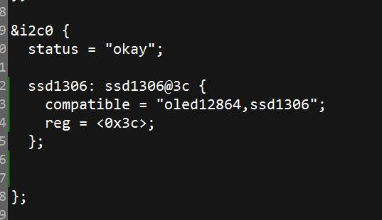